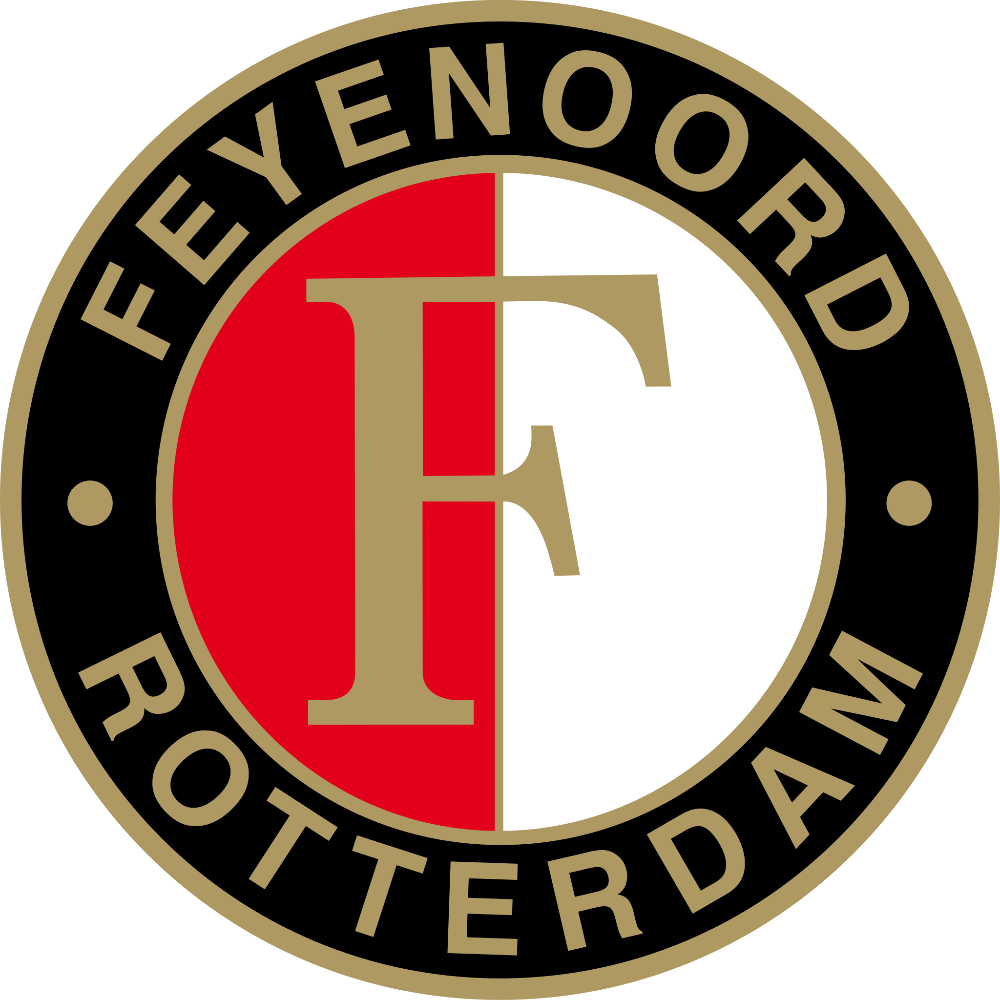

Home
geld
chatgptgame
Binairstelsel
Invoer - verwerking - uitvoer
Compressie
Kleurmodellen
Welkom op de hoofdpagina
Ik ga je meer vertellen over mij zelf. Ik ben Abel Makstenieks, woon nu in zoeterwoude en zoetermeer. Ik ben 16 jaar oud. Ik in de zomer een scooter gekocht. Mijn hobby's zijn naar de sportschool gaan en slapen.
Ik ben voor de voetbalclub Feyenoord
